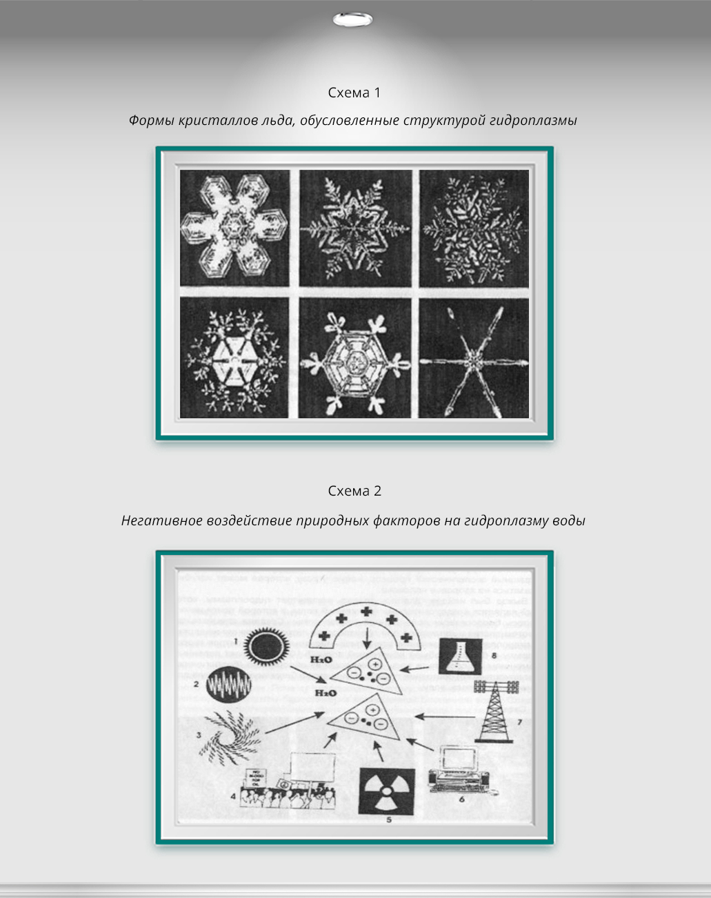

Сейчас на Земле имеется около 1400 млн. км3 воды. Пригодно для питания почти 9000 км3 воды. Нынче человечество потребляет около 4000 км воды. Больше всего воды в день используют американцы и японцы. Это почти 600 литров в день на каждого человека. Для сравнения, африканцы в таких странах, как Нигерия, Судан и Чад и других потребляют всего лишь 20 литров в день. Таковы цифры статистики, которые отражают лишь внешнюю сторону проблемы. Водное потребление растет, водный дефицит вместе с тем также увеличивается еще более высокими темпами. Ежегодно почти 2, 5 млн. человек в мире умирает от болезней, связанных с дефицитом потребления воды и ее плохого качества. Именно качество воды резко ухудшилось за последние несколько десятков лет, что привело к явлению «омертвления» воды. На схеме мы показываем, какие факторы разрушают биологически полноценную и «живую» воду и как образуются опасные для здоровья человека огромные массы воды. Таким образом, вода обладает, подобно живым существам, «памятью».
Где же сохраняется память?
Некоторые исследователи полагают, что в молекулярной структуре воды, которая действительно имеет достаточно сложную конфигурацию.
Причем, особое внимание придавалось роли примесей, например, микрочастиц железа при действии постоянного магнитного поля.
Однако такая гипотеза не выдерживает критики, потому что удержать информацию в условиях теплового шума и беспорядочных
тепловых колебаний молекул практически невозможно. В то же время, электронное возбуждение при действии физических факторов,
как-то: электромагнитных излучений в виде фотонов сохраняется в течение 10-8–10-11 секунд.
Эксперимент доказывал, что память у воды есть, т.к. вода, например, запомнила происхождение
луча лазера через ее толщу и изменяла свои свойства, а теория отвергала возможность такого явления.
Необходимо было искать выход из познавательного кризиса.
Оказывается, память хранится не на молекулярном субстрате воды, а в ее плазме – четвертом состоянии вещества.
Плазма состоит из элементарных частиц, как заряженных, так и нейтральных.
Именно эти частицы могут образовывать достаточно устойчивые структуры, обладающие очень тесным кооперативным взаимодействием.
Как бы возникают кластеры из элементарных частиц, что хорошо демонстрируется на схеме.
Именно в таких плазменных кластерах могут возникать плазменные волны под действием электромагнитных, звуковых и гравитационных факторов.
Таким образом, можно назвать кластеры гидроплазмой.
Гидроплазма – есть совокупность элементарных частиц–электронов, протонов и других в сочетании с частицами нейтрального знака и вещественного физического вакуума.
В это структуре могут находиться различного рода ионы, которые могут как увеличивать стабильность структуры, так и разрушать ее в зависимости от их физико-химических свойств. Можно сделать следующий основной вывод:
1. Болезнь и смерть воды.
Наверное, еще ни один писатель или ученый не описал процесс болезни, умирания и смерти капли воды. Впервые «больную» воду удалось зафиксировать на фотоэмульсии после подземных ядерных взрывов на Семипалатинском ядерном полигоне. Через каплю воды удалось увидеть и осознать явление памяти воды. После взрыва вода изменила свою структуру и сохраняла ее в течение многих месяцев. Ядерный взрыв породил совершенно новую по природе памяти воду, которая получила название «патогенная вода». Почему патогенная? Потому, что она нарушила устойчивость гидроплазмы биологически полноценной биогенной воды.
Следовательно, гидроплазменные структуры патогенной воды постепенно ассимилировались с биогенными водными структурами. Возникал гибрид, или химера, которая становилась бомбой замедленного действия для будущего здоровья живого организма (человека, животного, растения). Так «больная вода», внедрялась в ансамбль водных структур, порождала целый спектр заболеваний у человека и животных. Повысилась частота образования злокачественных опухолей, катастрофически падал иммунитет (иммунодефицит), деформировался спектр и амплитуда селективности иммунных реакций (аллергия, аутоаллергия), нарушалась проницаемость и эластичность клеточных мембран. Последнее обстоятельство особенно важно для прочности сосудов. Значительно увеличивалась частота инфарктов, инсультов и других сердечно-сосудистых заболеваний. Аналогичный эффект могут вызвать и природные факторы, как, например, изменения солнечной активности, геомагнитные бури, вихри зарядов геоаномальных зон. Все они также меняют память гидроплазмы, постепенно разрушают ее биогенность, в результате возникает химера, которая также является базой для возникновения целого букета заболеваний.
Следовательно, гидроплазма может быть разрушена информационным шумом окружающей среды, как природной, так и техногенной, что очень наглядно показано на нашей схеме. Вода нашей планеты начинает «болеть», все меньше и меньше в ней биологически полноценной гидроплазмы. Болезнь эта вызвана, прежде всего, бурным развитием техногенной цивилизации, которая порождает хаос и энтропию. Дальнейшее развитие биосферы и ноосферы как антиэнтропийных систем возможно только лишь на базе организованной низкоэнтропийной гидроплазмы, которая способна аккумулировать живую память биосферных структур. В случае, если вода теряет структурную организованную гидроплазму, она «умирает» с точки зрения ее ценности для живого организма, хотя она может быть и химически чистой. Всегда надо помнить, что чистая вода – это еще не полезная для живого организма вода, т.к. она может быть «мертвой» водой, лишенной структурно организованной гидроплазмы. Как остановить этот страшный экологический процесс, новую угрозу, которая может пагубно сказаться на здоровье человека.
Выход был найден. Удалось создать концентрат гидроплазмы, который является «оздоровительным» абиогенной воды, в которой почти не осталось биологически полноценной гидроплазмы. Создана специальная биотехнология и минизавод для производства пятого состояния вещества – гидроплазмы. Добавление всего лишь несколько миллилитров гидроплазмы в большой объем абиогенной воды (5-10 л) вызывает коренные изменения ее свойств, и весь объем воды из абиогенного (биологически неполноценного) состояния трансформируется в биогенную, полезную для живого организма воду.
Условные обозначения:
1. Солнечные бури
2. Геомагнитные бури
3. Вихри геоплазмы аномалий
4. Психогенная энергетическая деструкция больных масс людей
5. Ядерные взрывы, реакторы атомной электростанции
6. Компьютеры, сотовые и радиотелефоны
7. Высоковольтные лини и станции
8. Химические вещества
III. Патогенная микрофлора и биогенная вода
Способность биогенной воды с оптимальным содержанием структуры гидроплазмы изменять реактивность живых тканей косвенным образом была установлена в результате следующего микробиологического исследования.
Учитывая существующую роль кокковой микробной флоры в протогенезе смешанной парадонтопатии, проведено обследование 28 больных с развившейся стадией заболевания, которым в комплексе лечения применялось полоскание рта биогенной водой. Забор материала для микробиологического исследования у каждого больного производился из одного и того же патологического кармана дважды: после кюретажа, входившего в комплексное лечение и после последнего полоскания биогенной водой. Это позволило изучить состояние микробной флоры в зависимости только от воздействия на ткани и микробы биогенной воды.
У больных определялась степень микробной заселенности патологических зубодесневых карманов до и после биогенной воды. Если до воздействия при посеве содержимого патологического кармана каждого из больных вырастало от 43 до 75 колоний микробов, то после 3-4 полосканий биогенной водой в течение 3 месяцев, в среднем количестве микроорганизмов, содержащихся в патологических карманах, уменьшилось почти в четыре раза.
В основном, из патологических зубодесневых карманов до 3-5 процедур высевались стрептококки и стафилококки. В большинстве наблюдений определялись ассоциации этих микробов. Стрептококк в монокультуре был обнаружен в 10 посевах. Другие виды микробов вырастали редко.
В общей сложности у больных, обследованных до начала процедур было выделено 33 штамма стрептококков и 16 штаммов стафилококков. Материал от всех больных, обследованных после 10-дневного курса, дал 28 штаммов стрептококков и 11 штаммов стафилококков.
Из 33 штаммов стрептококков, выделенных до применения биогенной воды, 10 относились к бетагемолитическим, то есть к возбудителям большинства стрептококковых инфекций человека, а 23 штамма – к альфагемолитическим, играющим определенную этиологическую роль при фокальных инфекциях полости рта. После биогенной воды наиболее патогенные бетагемолитические стрептококки не обнаруживались, большинство стрептококков относились к менее патогенному типу альфа, появились стрептококки типа гамма, не вызывавшие гемолиза и относящиеся к условнопатогенным микробам.
До процедур среди стрептококков преобладали штаммы, продуцировавшие гиалуронидазу. Многие из них отличались высокой степенью активности. Неактивных штаммов всего было пять. После процедур картина резко изменилась: большинство штаммов стрептококка не обладали гиалуронадазной активностью. Слабую активность имели пять штаммов, среднюю – три, высокоактивных штаммов не было.
Для определения вирулентности стрептококков белым мышам вводилась взвесь, содержащая два миллиарда микробных тел. Большинство штаммов, выделенных до процедур, обладало высокой степенью вирулентности и вызвало гибель животных. Так, на вторые сутки после введения взвеси мыши погибли от 11 штаммов стрептококка, а на третьи сутки – от 10 штаммов. 12 штаммов не вызвали гибель животных. Из числа стрептококков, выделенных после процедур, 22 штамма, то есть абсолютное большинство, будучи введены белым мышам, не вызвали их гибель. Только от трех штаммов животные погибли на вторые сутки после введения и от трех – на третьи сутки. Патогенность стрептококков оценивалась по гемолитической функции, токсиногенезу, способности ферментировать манит, продуцировать гиалуронидазу, лецитиназу, коагулазу, по результатам дермонекротической пробы.
Из 16 выделенных до процедур штаммов стафилококков оценивались 7, лизировали эритроциты вокруг колоний. Из 11 штаммов, полученных после процедур, только три обладали гемолитической функцией.
Наличие гемотоксинов установлено у большинства штаммов стафилококков, не имеющих контактов с биогенной водой: два штамма продуцировали альфатоксин, два – бетатоксин, и восемь штаммов – дельтатоксин.
Среди штаммов, высеянных после биогенной воды, наиболее важные в патогенном отношении альфа и бетатоксины не были обнаружены. Только у шести штаммов определялось наличие дельтатоксина.
Манит до контакта с биогенной водой ферментировали четыре штамма, в опыте только один.
До приема биогенной воды половина штаммов стафилококков обладала гиалуронадазной активностью разной степени, в то числе два штамма – высокий. После курса из 11 штаммов один был среднеактивным и два штамма продуцировали лецитиназу, а после курса с биогенной водой только один штамм обладал этой способностью. Коагулазу до курса выделяли семь штаммов, после курса способность коагулировать плазму крови проявили только два штамма стафилококков.
Антиканцерогенный иммунодуриющий антитоксичный эффект концентрата гидроплазмы.
Научное обоснование и актуальность проблемы.
Впервые в мировой практике экспериментальных научных исследований сделано обоснование применения концентрата гидроплазмы (вода, насыщенная структурированными физическими зарядами и частицами физического вакуума) для подавления канцерогенной активности 3, 4 бензипирена, активации иммунодулирующих и антиоксидантных эффектов для профилактики и снижения токсичности агрессивных органических соединений.
Установлено, что длительное использование концентрата гидроплазмы в диете экспериментальных животных до прививки опухоли способствовали увеличению продолжительности жизни белых мышей. Гидроплазма активизирует жизнедеятельность лимфоцитов, что связано с изменением заряда клеточной поверхности.
Доказано, что при проникновении малых доз дихлорэтана в виде аэрозоля или паров происходит тотальная интоксикация. При применении гидроплазмы острое отравление у животных в контроле наступает при дозе 35 мг/л (100% смертность в течении суток), а в опыте, при этой же дозе погибает 40…60% животных.
У человека порог заметных изменений психофизиологического состояния наступает при вдыхании 0,3 – 0,6 мг/л в течение 2 – 3 часов.
Человек ощущает головную боль, сонливость, сладкий вкус во рту, разложение слизистых оболочек, жжение на коже лица и т.п.
Вышеуказанные симптомы у большинства (7 человек) добровольцев проходят через сутки. В случае, когда добровольцы
принимают гидроплазму в течение 10 дней до отравления дихлорэтаном , симптомы проходили уже через 7 часов.
Опытная группа (7 человек) в течении 10 дней до контакта с дихлорэтаном принимает концентрат гидроплазмы.
Капли гидроплазмы (по 3-5) вводят в левую и правую ноздрю, а также наносят на язык.
Кроме того, ежедневно, перед едой (утром, в обед и вечером), испытуемые выпивали по 1 стакану биогенной воды.
В каждый стакан добавлялось 7-10 капель концентрата гидроплазмы.
Прием гидроплазмы продолжался и при контакте с дихлорэтаном.
Результат – исчезновение симптома отравления через 7-10 часов после прекращения контакта с дихлорэтаном.
Вывод: за счет повышения резистентности клеточных мембран клеток крови под действием гидроплазмырезко
снижается токсичность дихлорэтана, и он быстрее выводится из организма.
В другой серии экспериментов изучена реакция лимфоцитов (клеток крови и лимфы) при действии дихлорэтана без концентрата гидроплазмы (контроль) и при введении в «клеточную среду небольших доз гидроплазмы. В качестве теста использовался цитофлююрометрический метод определения интенсивности флюоресценции комплекса акридиновый оранжевый ДНК. Исследования проводились на флююресцентном микроскопе. Материал брался из венозных сосудов в количестве 5 мл. Кровь наливали в пробирку с 0,5 мл геларина, разведенного физраствором в соотношении 1:10. В каждую пробирку добавляли дихлорэтан по 0,1 мл в различной концентрации. Пробирки делились на 2 части: контрольная – 7 пробирок и опытная – 7 пробирок. В последнюю добавлялось 0,1 мл концентрата гидроплазмы. Время экспозиции 30 минут, 1 час и 5 часов. Разведение дихлорэтана 1:103, 1:104, 1:105. Для каждого отдельного разведения время экспозиции (кровь + дихлорэтан) 30 минут, 1 час, 5 часов. Пробирки помещались в термостат 36, 5°С.
После этого из всех проб брались образцы и изготавливались препараты, окрашенные раствором акридинового оранжевого при РН 4, 4. Интенсивность флююресцентного комплекса лимфоцитов регистрировали на цитофлуориметре.
Результаты: при всех концентрациях дихлорэтана наблюдалось снижение показателей флюоресценции до 35 у.е. при исходных значениях 42-45 у.е. По мере увеличения экспозиции с дихлорэтаном до 3 часов, наблюдалось резкое снижение интенсивности до 27 у.е. в контроле.
В опытной группе максимальное снижение интенсивности до 35 у.е. наблюдалось при 3-х часовой экспозиции.
Результаты исследований показывают, что гидроплазма обладает достаточно выраженным антитоксическим действием, увеличивая резистентность клеточных мембран, защищает от конформационных изменения ДНК в клеточном ядре лимфоцитов.
Далее мы исследовали иммунодулирующее действие концентрата гидроплазмы. Известно, что иммунодуляторы уменьшают вероятность возникновения злокачественных новообразований. Длительное применения гидроплазмы в течении 30 дней перед трансплантацией опухолевых клеток в организм белых крыс с целью образования прививной опухоли проводилось в течении 30 дней. Гидроплазма добавлялась в питьевую воду в концентрации 1:105.. Данные показаны в Таблице 1. Гидроплазма изменяет заряд клеточных мембран, способствует активизации жизнеспособности лимфоцитов, что приводит к эффекту противоопухолевой устойчивости.
Полученные данные дали возможность надеяться на достоверный антиканцерогенный эффект при использовании концентрата гидроплазмы при табакокурении. Известно, что основным канцерогенным компонентом, который содержится в табачном дыме, является 3, 4 бензипирена. Большие концентрации его содержаться в древесном дегте, а также в саже печных труб. В эксперименте использовались 2 группы животных – контрольная и опытная, в рацион питания которой добавлялся концентрат гидроплазмы в соотношении 1:104. Выбритый участок на спине мышей (площадью 0,5 см2) ежедневно смазывался дегтем, в который добавлялось 10% печной сажи. Смазывание проходило, как в контрольной, так и в опытной группе в течение 50 дней.
Белые мыши обеих групп содержались на обычной лабораторной диете. На рис.1. показано гистограмма на 25-й день и 50-й день опыта. В контрольной группе смертность на 25-й день составила 10%. В опытной группе – 4%. К концу эксперимента, на 120-й день смертность в контрольной группе составила 52%, а в опытной группе 31%.
Анализ полученных результатов показывает, что гидроплазма, обладая антитоксическим и иммунодулирующим свойствами, подавляет канцерогенную активность очень агрессивного вещества, которое содержится в табачном дыме – 3,4 бензипирена.
Экспериментальные исследования дают базу для разработки методик снижения канцерогенной активности табачного дыма при курении, что позволит снизить онкологическую заболеваемость, как минимум, на 20-25%, а также уменьшить никотиновую зависимость курильщика в связи с повышением не специфической резистентности организма человека под действием концентрата гидроплазмы.
Инюшин Виктор Михайлович
Кампании-партнеры
Ваш e-mail не будет опубликован. Обязательные поля помечены *